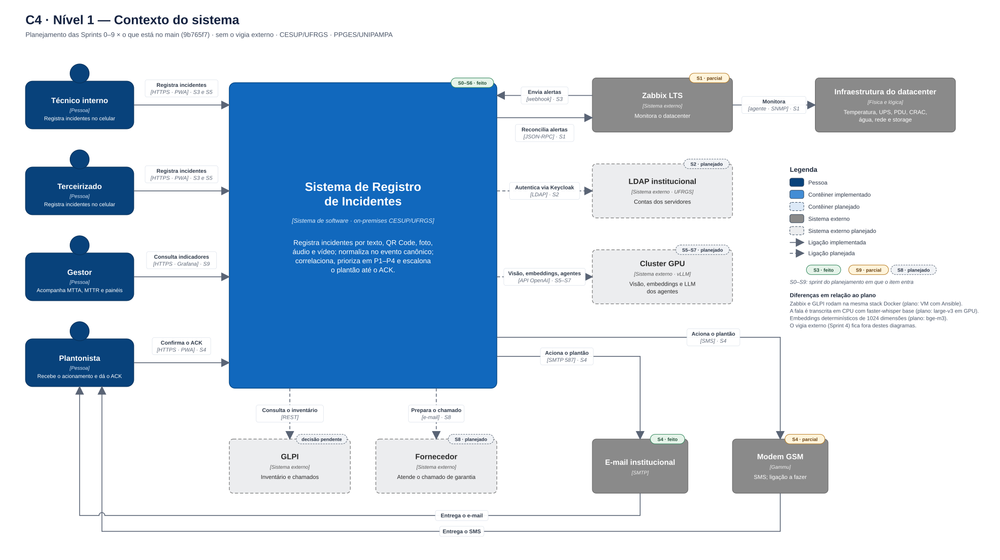
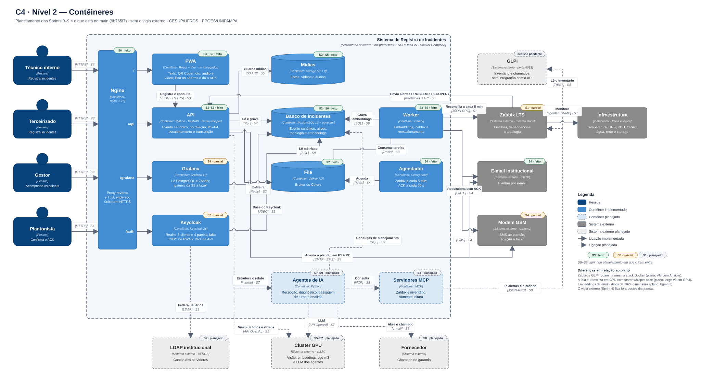

CESUP / UFRGS · PPGES / UNIPAMPA
Incidente laçado
antes de disparar.
PEALO é a Pronta Equipe de Atendimento e Liberação de Ocorrências do CESUP, apoiada pelo Sistema de Registro de Incidentes do datacenter: captura multimodal, correlação inteligente e tudo on-premises.
O problema
“Quantas falhas de fonte tivemos em 2026, e em quais equipamentos?”
Sem registro estruturado, a resposta depende da memória das pessoas.
Registro lento
Técnicos perdem minutos em formulários enquanto o incidente ocorre.
Alertas duplicados
Zabbix e registros manuais geram chamados repetidos, sem correlação.
Sem vigia externo
Nenhum alerta quando o datacenter fica inacessível fora do horário.
Trajetória
Cinco apresentações, em ordem
Cada etapa do projeto foi apresentada em um deck. Elas aparecem aqui na sequência em que foram produzidas.
Apresentação 1 · 16 slides
Registro de Incidentes com IA
Três implementações possíveis, comparadas lado a lado, e uma recomendação.
O sistema funciona em três ciclos
Volta ao serviço
Falha → alerta → atendimento. Minutos a horas. A IA agrupa alertas e sugere solução.
Falha não se repete
Histórico → causa → prevenção. Semanas a meses. A IA responde perguntas sobre o histórico.
Equipe registra bem
Registro fácil → relatório útil → mais registro. A IA resume e pré-preenche.
As três opções
| Critério | C · GLPI + Zabbix + NetBox com IA | D · Zabbix + Keep + GLPI | E · Freshservice (Freddy AI) |
|---|---|---|---|
| Ciclos com IA | B1 · B2 · R1 | B1 · R1 | B1 · B2 · R1 |
| Modelo | OpenAI ou local | Qualquer um | Freddy |
| O que sai da universidade | Parte | Nada | Tudo |
| Custo | Plugin + desenvolvimento | Open source | Por técnico |
| Risco | Chamados na OpenAI | Sem IA no histórico | Dependência |
Recomendação
Opção C, com modelo local
IA nos três ciclos e nenhum dado fora da universidade. Fase 1: GLPI + Zabbix (MVP). Fase 2: + NetBox. Fase 3: + assistente de IA com modelo local.
- A IA sugere; a pessoa decide
- Somente leitura
- Mascarar antes de enviar
- Preferir modelo local
- Resposta auditável
- IA só depois do MVP
Apresentação 2 · 12 slides
Sistema de Registro de Incidentes
Captura multimodal · Correlação inteligente · 100% on-premises.
A solução
Captura multimodal
Voz, foto, QR Code e texto: registro em menos de 30 segundos.
Correlação automática
Embeddings 1024d, score topológico + semântico, Zabbix integrado.
Priorização P1–P4
I×U×C. Segurança de pessoas sempre P1. Escalonamento automático.
Vigia externo 4G
Dead man's switch via GSM: SMS se o datacenter ficar inacessível.
100% on-premises
Nenhum dado sai da UFRGS. FastAPI + PostgreSQL + pgvector.
MTTA/MTTR mensuráveis
Métricas para as perguntas de pesquisa QP1, QP2 e QP3.
Sprints entregues
- Sprint 0Infraestrutura base: 15 containers, schema SQL com vector(1024), Keycloak, Nginx, Grafana, Zabbix e GLPI.
- Sprint 1Zabbix: webhook PROBLEM/RECOVERY, cliente JSON-RPC, model de topologia.
- Sprint 2Banco: SQLAlchemy assíncrono, 7 models, migrations Alembic, fallback em memória.
- Sprint 3Celery: PWA React inicial, tarefas de e-mail e SMS, processar_evento.
- Sprint 4 · MVPMotor P1–P4, correlação e escalonamento, vigia externo GSM (Raspberry Pi + modem 4G).
- Sprint 5Captura multimodal: foto/vídeo no S3, voz com Whisper, QR Code, embeddings 1024d.
- Sprint 6Persistência real e métricas: MTTA/MTTR em SQL, 800+ verificações, 84 req/s em concorrência.
Demonstração
- Técnico escaneia o QR do servidor
- Fotografa o rack com problema
- Sistema classifica P1 automaticamente
- Plantonista recebe o alerta e faz ACK
- Zabbix correlaciona e anexa ao chamado
Apresentação 3 · 13 slides
Versão revisada
O mesmo conteúdo, com texto revisado e um slide novo: como colocar o sistema no ar.
Do zero ao ar em três comandos
cp .env.example .envSenhas e parâmetros em um único arquivo, fora do git.
make setup15 containers, bancos, Keycloak, GLPI, Zabbix e S3 configurados em 15 a 30 min.
make rede-localTroca localhost pelo IP do servidor e ativa HTTPS para câmera e microfone.
Cada etapa pode ser repetida sozinha: make glpi-setup, make zabbix-setup, make garage-setup.
Apresentação 4 · 20 slides
Versão fonte grande
Feita para ser lida do fundo da sala: frases curtas, menos números por slide.
Na revisada
“Fórmula I×U×C com 12 sintomas mapeados”
“Dead man's switch via GSM: SMS se o datacenter ficar inacessível”
“Nenhum dado sai da UFRGS · FastAPI + PostgreSQL + pgvector”
Na fonte grande
“Impacto × urgência × confiança”
“SMS se o datacenter cair”
“On-premises: nenhum dado sai da UFRGS”
Apresentação 5 · 11 slides
O que mudou no sistema
Instalação, rede local e relato por áudio, vídeo e foto. 10 pull requests integrados ao main entre 23 e 30 de outubro de 2026.
Da fala ao chamado
- Gravar áudio ou vídeo no app
- Transcrever com faster-whisper no servidor
- Interpretar ativo, sala, rack, risco e prioridade
- Revisar: o técnico confirma os campos
- Chamado com o áudio e o vídeo anexados
“…um superaquecimento dentro da sala T4.” Relato real gravado no app: preencheu sala T4 e prioridade P1. Antes, os campos ficavam vazios.
O que ainda falta
- 1Pesquisar prioridades de incidentes para ajustar a indicação de P1 a P4.
- 2HTTPS confiável nos celulares, com uma autoridade certificadora local.
- 3Cadastrar as salas e os ativos reais, para o relato sugerir também o ativo.
Como a PEALO prioriza
Motor P1–P4 e escalonamento
Prioridade = impacto × urgência × confiança. Risco a pessoas é sempre P1; água, curto ou falha de fonte vão ao máximo. Sem ACK no prazo, o plantão é reacionado.
| Prioridade | Prazo para ACK | Acionamento |
|---|---|---|
| P1 | 10 min | Plantão por e-mail e SMS |
| P2 | 30 min | Plantão por e-mail e SMS |
| P3 | 120 min | Reescalonamento por e-mail |
| P4 | sem limite | Sem escalonamento |
Correlação humano + Zabbix
S = 0,30·topologia + 0,20·tempo + 0,20·local + 0,30·semântica
S ≥ 0,75 anexa ao incidente existente · S ≥ 0,45 sugere a ligação ao técnico.
Arquitetura
Modelo C4
Planejamento das Sprints 0–9 comparado ao que já está no main. Clique para ampliar.


Perguntas de pesquisa · PPGES
O que o projeto quer provar
A captura multimodal reduz o tempo de registro para menos de 30 s?
A correlação humano + Zabbix reduz duplicatas com precisão ≥ 85%?
A priorização explicável reduz acionamentos desnecessários em ≥ 80%?